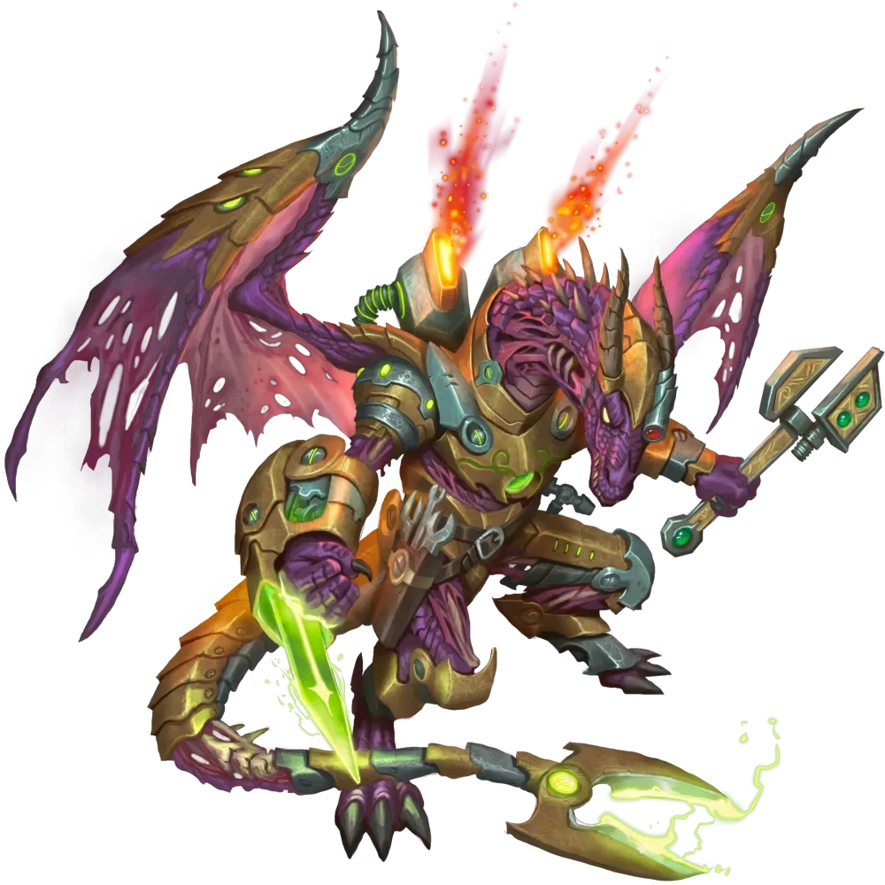

|
在众多类人种族的文化中，巨龙都是力量与强盛的象征。因此，再加上与生俱来的傲慢，巨龙往往很难承认事情出了差错。然而，有些巨龙体内奔涌着狂暴的魔法能量，这股能量一旦失控飙升，便会彻底改变它们的一生。有时，整支龙族血脉都会继承这种魔力，并在漫长的世代中延续下去。但对于这些所谓的“异类龙”而言，这股失控的能量究竟意味着什么？整个巨龙社会或许对它们不屑一顾，但它们强大的魔力却为其带来了无穷无尽的未开发潜能！ 你是一条义体龙，体内充斥着死灵魔力，腐朽的血肉与萎缩的肢体往往被替换为机械部件。你是异类龙家族的一员。你的关联伤害类型为黯蚀，你的吐息武器为15尺锥状，需要进行体质豁免。 巨龙特质属性值提升。你的力量或体质值提升2点。 年龄。任何年龄段的巨龙都可以举行永恒之光仪式，因此哪怕是一条刚完成仪式的初生永光龙，严格来说也可能已经活了数千岁。不过，仪式澎湃的魔法能量会洗去衰老的痕迹。从仪式中苏醒的初生永光龙洋溢着青春活力与无限潜能。尽管部分学者持不同看法，但只要不死于暴力或其他灾祸，永光龙的寿命与传统派巨龙同样漫长。 阵营。永光龙的龙族血统会强烈影响其信念，但影响程度远不如同血统的传统派巨龙。例如，银永光龙往往是善良的捍卫者，而黑永光龙则往往狡诈刻薄。然而，永光龙深知龙脉并非不可违逆的宿命。任何永光龙都可以完全抛弃先祖的旧习，去开拓属于自己的道路。 体型。除非一条永光龙将自身魔力专注于增大体型（许多永光龙都会这样做），否则它们的体型并不会比常见的类人种族更大。你的体型可在小型或中型之间自选。 速度。你的基础步行速度为30尺。 黑暗视觉。你同样具备传统派巨龙的敏锐感官。在距离你60尺范围内，你可以将微光光照视作明亮光照，将黑暗视作微光光照。你在黑暗中无法分辨颜色，只能看到灰度的影像。 龙之馈赠。你从巨龙职业所列的龙之馈赠中获得一项龙之馈赠。如果某项馈赠具有先决条件，你必须满足其先决条件才能获得它。 龙类。你的生物种类为龙类，而非类人生物。 天生武器。除常规的徒手打击外，你还获得两种天生武器攻击：啃咬攻击与爪击攻击。你的啃咬攻击造成1d6点穿刺伤害；你的爪击攻击造成1d4点挥砍伤害。 你必须至少有一只手空闲才能发动爪击攻击。 你在进行爪击攻击的攻击检定和伤害掷骰时可以使用敏捷代替力量，但啃咬攻击不适用。 语言。你能够说、读、写通用语和龙语。 顽强不屈。你在死亡豁免失败四次后才会死亡（而非三次）。 永光义体龙背景设定义体龙体内充斥着满溢的虚空能量，时刻威胁着要令他们的躯体腐坏溃烂。正因如此，他们总是在寻找强化改造自身的新途径，而永恒之光仪式便是一部分义体龙为延续生命所采取的极端手段。首先也是最重要的一点，仪式的治愈伟力会抹去义体龙的虚空亲和，使他们更容易借助常规的、侧重生命力的治疗魔法来延缓自身病症的恶化。此外，将庞大的身躯收缩为较小的骨架，也意味着义体龙更容易找到尺寸合适的义肢与其他科技造物，而不必事事亲手定制。还有些义体龙将这项仪式视作与人类等富有创造力的先祖建立联系的契机，借此交流乃至获取他们的秘传技艺。传统派义体龙彼此之间通常合不来，这种态度也延续到了永光义体龙身上。部分传统派――尤其是那些总在追求更庞大、更强力机械改造的个体――将这项仪式视为一种自甘退化，认为永光义体龙纯属蠢货。不过偶尔也会有传统派与永光义体龙结成搭档，互相协助缓解躯体不断腐朽的影响：体型较小的一方通常提供工匠制作或医术方面的专长，体型较大的一方则负责搜罗所需的原材料。在这样的搭档关系中，必要时一方还能约束另一方的道德底线；但倘若两条龙都心怀歹意，他们便可能沦为祸害周遭乡野的危险大患。 某些性情的永光义体龙会与其他血统的伙伴结伴同行，但在确信新结识的同伴值得托付信任之前，他们往往对自己的真实本质讳莫如深。毕竟，义体龙腐坏的血肉可能会令旁人心生反感，甚至误把他们当成亡灵生物而贸然动手。这类永光义体龙可能会借助幻术、妆容或宽大厚重的衣物来掩饰真容，并将身上的机械义体解释为旧日战伤或恶疾留下的痕迹。然而在激烈的战斗中或身受重伤之后，这种伪装往往难以维系，真相很快便会水落石出。有些冒险小队反感遭到隐瞒，可能会在此时与义体龙分道扬镳；但另一些人――尤其是那些自身族裔在历史上也曾饱受迫害的同伴――则能理解这份保守秘密的苦衷。能觅得如此同袍情谊的永光义体龙实属幸运。 永光义体龙偏爱那些能让他们对自身躯体或死灵能量展开实验的职业。发明家无疑是最受青睐的选择；同样地，义体龙也可能踏上铳士之路，尤其是当他们能将火器直接挂载到自己躯体上时。更偏向神秘学方向的义体龙则可能选择成为信奉不死神�o的牧师、专精研究虚空魔法的法师，或是背负着映照自身腐朽躯体之诅咒的先知。 义体生理学哪怕是对研究过多条义体龙的专家而言，也根本无法预判某条义体龙身上的哪个部位会最先坏死。因此，在维持半机械躯体运转所需的部件上，没有哪两条义体龙是完全相同的：某条义体龙的面庞或许几乎完好无损，而另一条却可能不得不将几乎整个头颅都替换成机械。所幸的是，每当义体龙的某个身体部位开始被黯蚀侵蚀压倒时，几乎总会提前浮现足够明显的征兆，让他们来得及在为时已晚之前打造出替代义体或应急方案。 延伸阅读：对应怪物图鉴：义体龙 ・ 主书通用巨龙种族特质 ・ 巨龙职业 ・ 本卷新增龙之馈赠 |
 义体龙（Bionic Dragon） |